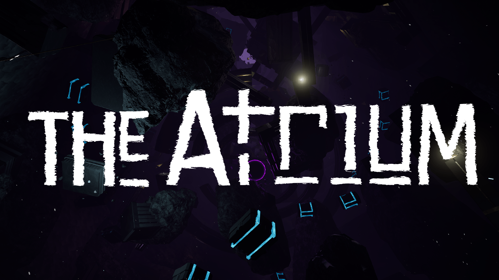
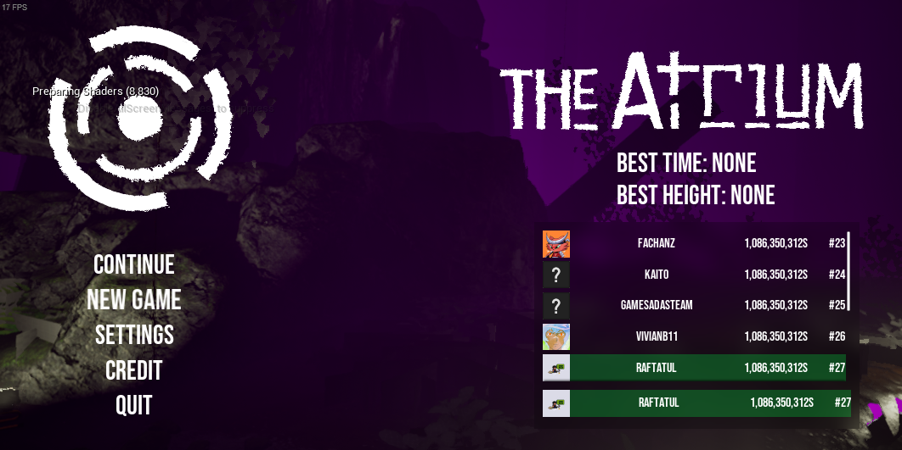

The Atrium
I worked on the project as a Technical Game Designer. I programmed the 3Cs as well as other features like the Steam integration and the dynamic fog.
Camera
The camera was designed to feel alive and dynamic without giving the sensation of motion sickness.
Here is a list of elements implemented:
Camera tilt
The camera tilt a little based on the x velocity relative to the camera of the player.
Camera Bobbing
Apply camera bobbing when the player is moving on the ground using the Camera Shake system of Unreal Engine. The shake force depend of the movement state of the player (walk/run).
FOV
Since the player constantly needs to focus on a surface, the field of view is kept wide to allow them to see more around the edges of the screen. The FOV expands further when the player falls, enhancing the feeling of speed.
Character
To navigate through the level, the player can walk/run and use his bump ability.
Bump Ability
- The player can push himself in the opposite direction he is facing when bumping on certain surfaces.
- There is a max amount of 3 charges, the charges reload when the player touch the ground.
UI
Bump ability feedback:
- The player is notice he can bump when the white dot appear.
- An animation is played when the player use the bump input.
- When a bump is successfully made, a charge is removed (turning a charge gray).
Steam Integration
I implement Steam using the Steam SDK and Unreal C++ to be able to use the leaderboard system of Steam for the game.
Dynamic Fog
The level artists Rémi Trotereau and Charles Defoy asked me to create a fog that can alternate between multiple colors so they could adjust the fog's color according to the player's height position.
Here is what I made to accomplish this effect:
- First, I create an array of structures containing a color variable and a height variable.
- Next, I need to find the 2 colors closest to the camera's height position
- Then, I blend the colors based on the camera's position between the two color positions.
- Finally, I apply the color in a post process material.
Save System - Settings
I worked on the save system, it register the player position, time and settings.
I implement the graphics, audio and gameplay settings. Each parameters are saved by the Unreal Save System.